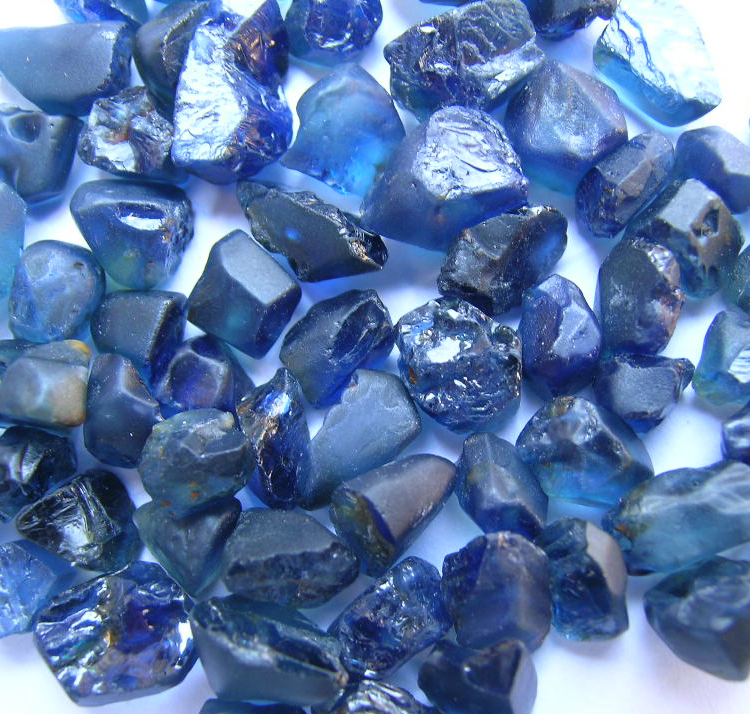

SAPPHIRE MINING

Sapphires rank nearly perfect on the Mohs hardness scale and are therefore ideal for use in items of jewelry as they won’t easily be worn down. Typically mined underground (as opposed to in a pit), the finest sapphires are found primarily in Kashmir, Burma, and Sri Lanka. It is common for sapphires to be treated with heat or be “filled” in order to improve colour, clarity, and appearance of internal fractures.